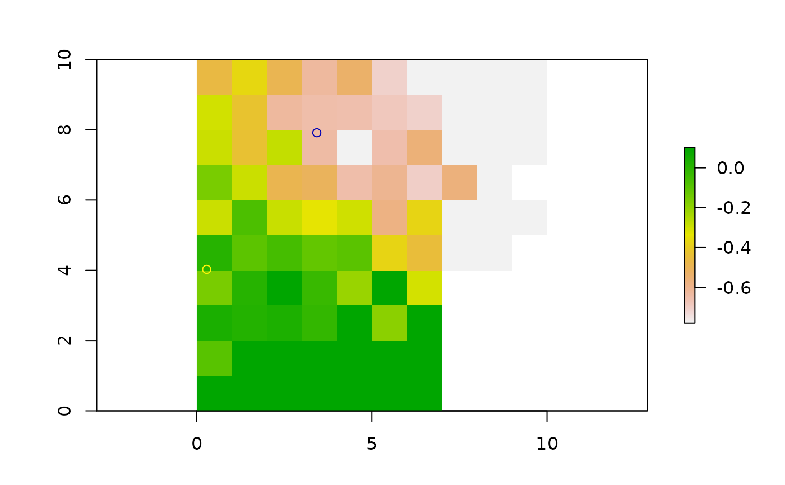

This function takes a rasterstack of pathdistances and generates surfaces by weighting parameter values by these distances
ipdwInterp(
spdf,
rstack,
paramlist,
overlapped = FALSE,
yearmon = "default",
removefile = TRUE,
dist_power = 1,
trim_rstack = FALSE
)SpatialPointsDataFrame object
RasterStack of path distances
character. String representing parameter names
logical. Default is FALSE, specify TRUE if some points lie on top of barriers
character. String specifying the name of the spdf
logical. Remove files after processing?
numeric. Distance decay power (p)
logical. Trim the raster stack by the convex hull of spdf
RasterLayer
Under the hood, this function evaluates:
$$V = \frac{\sum\limits_{i=1}^n v_i \frac{1}{d_i^p}}{\sum\limits_{i=1}^n \frac{1}{d_i^p}}$$
where d is the distance between prediction and measurement points,
v_i is the measured parameter value, and p is a power parameter.
spdf <- data.frame(rnorm(2))
xy <- data.frame(x = c(4, 2), y = c(8, 4))
coordinates(spdf) <- xy
m <- matrix(NA, 10, 10)
costras <- raster(m, xmn = 0, xmx = ncol(m), ymn = 0, ymx = nrow(m))
# introduce spatial gradient
costras[] <- runif(ncell(costras), min = 1, max = 10)
for (i in 1:nrow(costras)) {
costras[i, ] <- costras[i, ] + i
costras[, i] <- costras[, i] + i
}
rstack <- pathdistGen(spdf, costras, 100, progressbar = FALSE)
final.raster <- ipdwInterp(spdf, rstack, paramlist = c("rnorm.2."), overlapped = TRUE)
plot(final.raster)
plot(spdf, add = TRUE)
